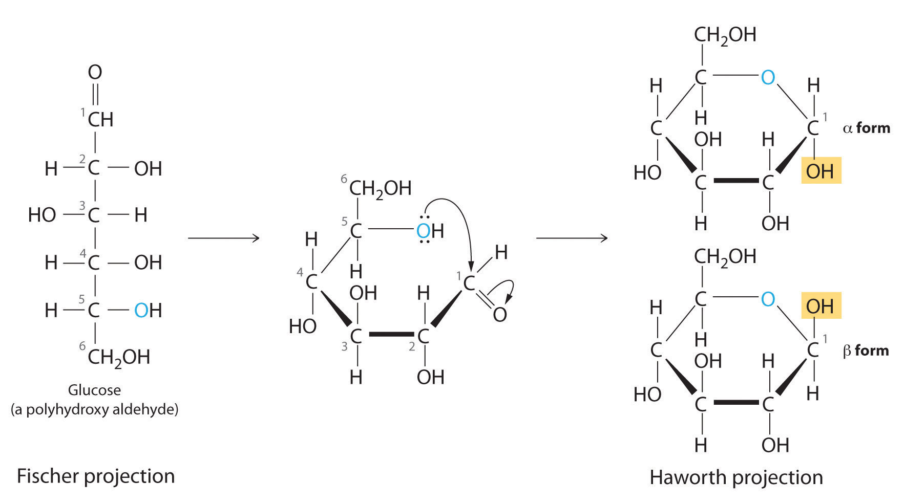
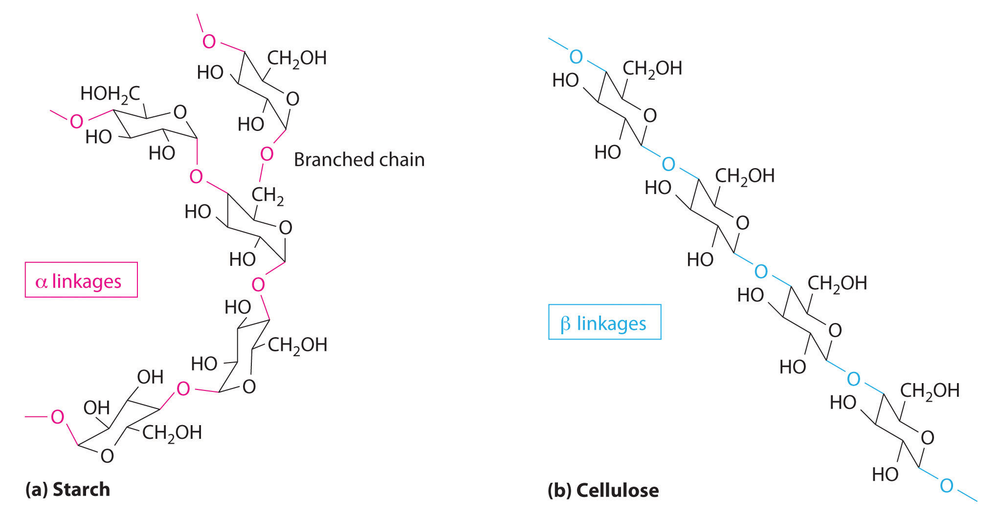
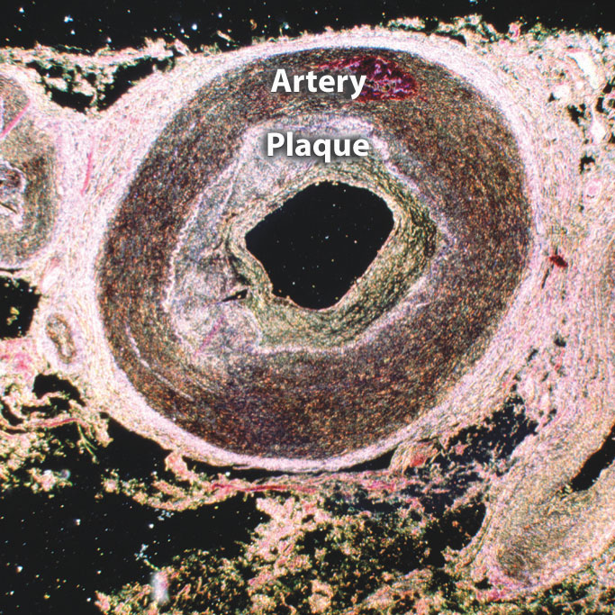
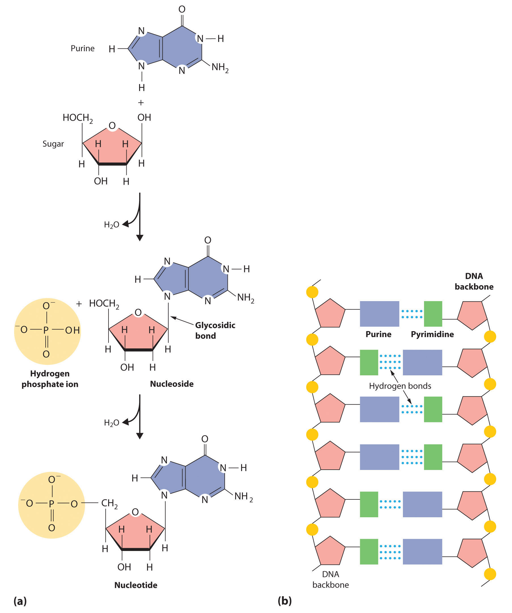

All the functional groups described in this chapter are found in the organic molecules that are constantly synthesized and destroyed by every living organism on Earth. A detailed understanding of the reactions that occur in living organisms is the goal of biochemistry, which deals with a wide variety of organic structures and reactions. The most abundant substances found in living systems belong to four major classes: proteins, carbohydrates, lipids, and nucleic acids. Here we briefly describe the structure and some functions of these biological molecules.
In Chapter 12 "Solids", Section 12.8 "Polymeric Solids", we described proteinsA biological polymer with more than 50 amino acid residues linked together by amide bonds. as biologically active polymers formed from amino acids linked together by amide bonds. In addition to an amine group and a carboxylic acid group, each amino acid contains a characteristic R group (Figure 5.16 "The Structures of 10 Amino Acids"). In the simplest amino acid, glycine, the R group is hydrogen (–H), but in other naturally occurring amino acids, the R group may be an alkyl group or a substituted alkyl group, a carboxylic group, or an aryl group. The nature of the R group determines the particular chemical properties of each amino acid. In Figure 5.16 "The Structures of 10 Amino Acids", all the amino acids found in proteins except glycine are chiral compounds, which suggests that their interactions with other chiral compounds are selective. Some proteins, called enzymes, catalyze biological reactions, whereas many others have structural, contractile, or signaling functions. Because we have described proteins previously, we will not discuss them further.
The general structure of an amino acid. An amino acid is chiral except when R is an H atom.
Carbohydrates are the most abundant of the organic compounds found in nature. They constitute a substantial portion of the food we consume and provide us with the energy needed to support life. Table sugar, milk, honey, and fruits all contain low-molecular-mass carbohydrates that are easily assimilated by the human body. In contrast, the walls of plant cells and wood contain high-molecular-mass carbohydrates that we cannot digest.
Once thought to be hydrates of carbon with the general formula Cn(H2O)m, carbohydratesA polyhydroxy aldehyde or a polyhydroxy ketone with the general formula are actually polyhydroxy aldehydes or polyhydroxy ketones (i.e., aldehydes or ketones with several –OH groups attached to the parent hydrocarbon). The simplest carbohydrates consist of unbranched chains of three to eight carbon atoms: one carbon atom is part of a carbonyl group, and some or all of the others are bonded to hydroxyl groups. The structure of a carbohydrate can be drawn either as a hydrocarbon chain, using a Fischer projection, or as a ring, using a Haworth projection (Figure 24.21 "Fischer Projection and Haworth Projection of Glucose"). The Haworth projection is named after the British chemist Sir Walter Norman Haworth, who was awarded a Nobel Prize in Chemistry in 1937 for his discovery that sugars exist mainly in their cyclic forms, as well as for his collaboration on the synthesis of vitamin C. The cyclic form is the product of nucleophilic attack by the oxygen of a hydroxyl group on the electrophilic carbon of the carbonyl group within the same molecule, producing a stable ring structure composed of five or six carbons that minimizes bond strain (Figure 24.21 "Fischer Projection and Haworth Projection of Glucose"). The substituents on the right side of the carbon chain in a Fischer projection are in the “down” position in the corresponding Haworth projection. Attack by the hydroxyl group on either side of the carbonyl group leads to the formation of two cyclic forms, called anomers: an α form, with the –OH in the “down” position, and a β form, with the –OH in the “up” position.
At age 14, Walter Norman Haworth left school to join his father to learn linoleum design and manufacturing, but he became interested in chemistry through his use of dyes. Private tutoring enabled him to pass the entrance exam of the University of Manchester, where he received his doctorate in 1911. During World War I, Haworth organized the laboratories at St. Andrews for the production of chemicals and drugs, returning to the investigation of carbohydrates after the war.
Figure 24.21 Fischer Projection and Haworth Projection of Glucose
In solution, simple sugars exist predominantly in the ring form, the product of nucleophilic attack by the oxygen of a hydroxyl group on the electrophilic carbon of the carbonyl group. The α and β forms, called anomers, differ in the configuration at C1.
Carbohydrates are classified according to the number of single saccharide, or sugar, units they contain (from the Latin saccharum, meaning “sugar”). The simplest are monosaccharides; a disaccharide consists of two linked monosaccharide units; a trisaccharide has three linked monosaccharide units; and so forth. Glucose is a monosaccharide, and sucrose (common table sugar) is a disaccharide. The hydrolysis of sucrose produces glucose and another monosaccharide, fructose, in a reaction catalyzed by an enzyme or by acid:
Polysaccharides hydrolyze to produce more than 10 monosaccharide units.
The common monosaccharides contain several chiral carbons and exist in several isomeric forms. One isomer of glucose, for example, is galactose, which differs from glucose in the position of the –OH bond at carbon-4:
Because carbons-2, -3, -4, and -5 of glucose are chiral, changing the position of the –OH on carbon-4 does not produce an enantiomer of glucose but a different compound, galactose, with distinct physical and chemical properties. Galactose is a hydrolysis product of lactose, a disaccharide found in milk. People who suffer from galactosemia lack the enzyme needed to convert galactose to glucose, which is then metabolized to CO2 and H2O, releasing energy. Galactose accumulates in their blood and tissues, leading to mental retardation, cataracts, and cirrhosis of the liver.
Because carbohydrates have a carbonyl functional group and several hydroxyl groups, they can undergo a variety of biochemically important reactions. The carbonyl group, for example, can be oxidized to form a carboxylic acid or reduced to form an alcohol. The hydroxyl groups can undergo substitution reactions, resulting in derivatives of the original compound. One such derivative is Sucralose, an artificial sweetener that is six times sweeter than sucrose; it is made by replacing two of the hydroxyl groups on sucrose with chlorine. Carbohydrates can also eliminate hydroxyl groups, producing alkenes.
Because carbohydrates have a carbonyl functional group and several hydroxyl groups, they can undergo a variety of reactions.
Two familiar polysaccharides are starch and cellulose, which both hydrolyze to produce thousands of glucose units. They differ only in the connection between glucose units and the amount of branching in the molecule (Figure 24.22 "The Polysaccharides Starch and Cellulose"). Starches can be coiled or branched and are hydrolyzed by the enzymes in our saliva and pancreatic juices. Animal starch, called glycogen, is stored in the liver and muscles. It consists of branched glucose units linked by bonds that produce a coiled structure. The glucose units in cellulose, in contrast, are linked to give long, unbranched chains. The chains in cellulose stack in parallel rows held together by hydrogen bonds between hydroxyl groups. This arrangement produces a rigid structure that is insoluble in water.
Figure 24.22 The Polysaccharides Starch and Cellulose
Starches (a) and cellulose (b) differ in the connection between glucose units and the amount of branching in the molecule. Starches can be coiled or branched, whereas cellulose, the primary structural material of plants, has long, unbranched chains held together by hydrogen bonds.
Cellulose is the primary structural material of plants and one of the most abundant organic substances on Earth. Because our enzymes are not able to hydrolyze the bonds between the glucose units in cellulose, we are unable to digest it. A recently marketed product containing a high percentage of cellulose was sold as a dietetic substance for rapid weight loss, but those who consumed it experienced severe intestinal discomfort because the cellulose could not be digested. The product was quickly removed from the market.
The Fischer projection of xylose, found in many varieties of apples, is shown. Draw the ring form (Haworth projection) of xylose.
Given: Fischer projection of a sugar
Asked for: cyclic structure
Strategy:
A Identify the nucleophile and the electrophile. Indicate the point of attack, remembering that cyclic structures are most stable when they contain at least five atoms in the ring to prevent bond strain from bond angles that are too small.
B Draw the cyclic form of the structure.
Solution:
A The carbonyl carbon (C1) is a good electrophile, and each oxygen is a good nucleophile. Nucleophilic attack occurs from the –OH group on C4, producing a stable five-membered ring.
B Because of rotation about the bond between C1 and C2, ring formation gives both a and b anomers, with the following structures (H atoms have been omitted for clarity):
Exercise
Draw the cyclic form(s) of galactose, whose Fischer projection is shown in the previous discussion.
Answer:
LipidsA family of compounds that includes fats, waxes, some vitamins, and steroids and characterized by their insolubility in water. (from the Greek lipos, meaning “fat” or “lard”) are characterized by their insolubility in water. They form a family of compounds that includes fats, waxes, some vitamins, and steroids. Fatty acids, the simplest lipids, have a long hydrocarbon chain that ends with a carboxylic acid functional group. In saturated fatty acids, the hydrocarbon chains contain only C–C bonds, so they can stack in a regular array (part (a) in Figure 24.23 "Fatty Acids, the Simplest Class of Lipids"). In contrast, unsaturated fatty acids have a single double bond in the hydrocarbon chain (monounsaturated) or more than one double bond (polyunsaturated). These double bonds give fatty acid chains a kinked structure, which prevents the molecules from packing tightly (part (b) in Figure 24.23 "Fatty Acids, the Simplest Class of Lipids"). As a result of reduced van der Waals interactions, the melting point of an unsaturated fatty acid is lower than that of a saturated fatty acid of comparable molecule mass, thus producing an oil rather than a solid. (For more information on van der Waals interactions, see Chapter 11 "Liquids", Section 11.2 "Intermolecular Forces".) Fish oils and vegetable oils, for example, have a higher concentration of unsaturated fatty acids than does butter.
Figure 24.23 Fatty Acids, the Simplest Class of Lipids

Fatty acids are composed of a long chain that terminates in a carboxylic acid functional group. (a) Molecules of saturated fatty acids, which contain no carbon–carbon double bonds, can stack in a regular array. (b) Molecules of unsaturated fatty acids, which contain one or more cis carbon–carbon double bonds, have kinked structures that cannot pack closely together.
The double bonds of unsaturated fatty acids can by hydrogenated in an addition reaction that produces a saturated fatty acid:
Equation 24.16
They can also be oxidized to produce an aldehyde or carboxylic acid. (For more information on hydrogenation, see Chapter 14 "Chemical Kinetics", Section 14.8 "Catalysis".)
Unsaturated fatty acids are the starting compounds for the biosynthesis of prostaglandins. These hormone-like substances are involved in regulating blood pressure, tissue inflammation, and contracting and relaxing smooth muscles. Drugs such as aspirin and ibuprofen inhibit the production of prostaglandins, thereby reducing inflammation.
Waxes are esters produced by the nucleophilic attack of an alcohol on the carbonyl carbon of a long-chain carboxylic acid (Figure 24.18). For example, the wax used in shoe polish and wax paper, which is derived from beeswax, is formed from a straight-chain alcohol with 15 carbon atoms and a fatty acid with 31 carbon atoms. Triacylglycerols are a particularly important type of ester in living systems; they are used by the body to store fats and oils. These compounds are formed from one molecule of glycerol (1,2,3-trihydroxypropane) and three fatty acid molecules. During warmer months of the year, animals that hibernate consume large quantities of plants, seeds, and nuts that have a high fat and oil content. They convert the fatty acids to triacylglycerols and store them. Hydrolysis of stored triacylglycerols during hibernation (the reverse of Figure 24.18) releases alcohols and carboxylic acids that the animal uses to generate energy for maintaining cellular activity, respiration, and heart rate. Derivatives of triacylglycerols with a phosphate group are major components of all cell membranes.
Steroids are lipids whose structure is composed of three cyclohexane rings and one cyclopentane ring fused together. The presence of various substituents, including double bonds, on the basic steroid ring structure produces a large family of steroid compounds with different biological activities. For example, cholesterol, a steroid found in cellular membranes, contains a double bond in one ring and four substituents: a hydroxyl group, two methyl groups, and a hydrocarbon chain.
Cholesterol is the starting point for the biosynthesis of steroid hormones, including testosterone, the primary male sex hormone, and progesterone, which helps maintain pregnancy. These cholesterol derivatives lack the long hydrocarbon side chain, and most contain one or more ketone groups.
Cholesterol is synthesized in the human body in a multistep pathway that begins with a derivative of acetic acid. We also consume cholesterol in our diets: eggs, meats, fish, and diary products all contain cholesterol, but vegetables and other plant-derived foods do not contain cholesterol. Excess cholesterol in the human body can cause gallstones, which are composed of nearly 100% cholesterol, or lipid deposits called plaque in arteries. A buildup of plaque can block a coronary artery and result in a heart attack (Figure 24.24 "Plaque in an Artery").
Figure 24.24 Plaque in an Artery
Plaque, a lipid deposit, forms from excess cholesterol in the body. This artery is nearly blocked by a thick deposit of plaque, which greatly increases the risk of a heart attack due to reduced blood flow to the heart.
Nucleic acidsA linear polymer of nucleotides that is the basic structural component of DNA and RNA. are the basic structural components of DNA (deoxyribonucleic acid) and RNA (ribonucleic acid), the biochemical substances found in the nuclei of all cells that transmit the information needed to direct cellular growth and reproduction. Their structures are derived from cyclic nitrogen-containing compounds called pyrimidines and purines, which can engage in hydrogen bonding through the lone electron pair on nitrogen (in pyrimidine and purine) or through the hydrogen of the amine (in purine):
The same cyclic structures are found in substances such as caffeine, a purine that is a stimulant, and the antifungal agent flucytosine, a pyrimidine. (For more information on the structure of caffeine, see Chapter 3 "Chemical Reactions", Section 3.2 "Determining Empirical and Molecular Formulas".)
When a pyrimidine or a purine is linked to a sugar by a bond called a glycosidic bond, a nucleoside is formed. Adding a phosphoric acid group to the sugar then produces a nucleotide (part (a) in Figure 24.25 "The Formation of Nucleic Acids"). The linkage of nucleotides forms a polymeric chain that consists of alternating sugar and phosphate groups, which is the backbone of DNA and RNA (part (b) in Figure 24.25 "The Formation of Nucleic Acids").
While the function of DNA is to preserve genetic information, RNA translates the genetic information in DNA and carries that information to cellular sites where proteins are synthesized. Many antibiotics function by interfering with the synthesis of proteins in one or more kinds of bacteria. Chloramphenicol, for example, is used against infections of the eye or outer ear canal; it inhibits the formation of peptide bonds between amino acids in a protein chain. Puromycin, which is used against herpes simplex type I, interrupts extension of a peptide chain, causing the release of an incomplete protein and the subsequent death of the virus.
Figure 24.25 The Formation of Nucleic Acids
(a) When pyrimidine or purine and a sugar react to form a glycosidic bond, a nucleoside is produced. Adding a phosphoric acid group to the sugar of a nucleoside produces a nucleotide. (b) Nucleotides link together to form long polymeric chains. A DNA molecule consists of two such chains held together by hydrogen bonding between the purine and pyrimidine components on different chains.
Mutations in the DNA of an organism may lead to the synthesis of defective proteins. Phenylketonuria (PKU), for example, is a condition caused by a defective enzyme. Left untreated, it produces severe brain damage and mental retardation. Albinism is caused by a defective enzyme that is unable to produce melanin, the pigment responsible for the color of skin and hair. Cystic fibrosis, the most common inherited disease in the United States, blocks pancreatic function and causes thick mucus secretions that make breathing difficult. An area of intense research in combating cancer involves the synthesis of drugs that stop uncontrolled cell growth by interfering with DNA replication.
The four major classes of organic compounds found in biology are proteins, carbohydrates, lipids, and nucleic acids. Their structures and reactivity are determined by the functional groups present.
Proteins are biologically active polymers formed from amino acids linked together by amide bonds. All the amino acids in proteins are chiral compounds except glycine. The most common organic compounds found in nature are the carbohydrates, polyhydroxy aldehydes or polyhydroxy ketones in unbranched chains of three to eight carbons. They are classified according to the number of sugar, or saccharide, units, and they can be drawn as a chain in a Fischer projection or in a cyclic form called a Haworth projection. The two cyclic forms in a Haworth projection are called anomers. Many sugars contain at least one chiral center. With their carbonyl and hydroxyl functional groups, carbohydrates can undergo a variety of biochemically relevant reactions. Starch and cellulose differ only in the connectivity between glucose units. Starches can be branched or unbranched, but cellulose, the structural material of plants, is unbranched, and cannot be digested by humans. Lipids are insoluble in water. The simplest lipids, fatty acids, have a long hydrocarbon chain ending in a carboxylic acid functional group. Their physical properties depend on the number of double bonds in the chain. Prostaglandins, hormone-like substances, are formed from unsaturated fatty acids, and waxes are long-chain esters of saturated fatty acids. Triacylglycerols, which the body uses to store fats and oils, consist of glycerol esterified to three fatty acid molecules. Steroids, which include cholesterol and the steroid hormones, are characterized by three cyclohexane rings and one cyclopentane ring fused together. The basic structural units of DNA and RNA are the nucleic acids, whose structures are derived from nitrogen-containing cyclic compounds called pyrimidines and purines. These structures are linked to a sugar through a glycosidic bond, forming a nucleoside. Adding a phosphoric acid group produces a nucleotide. Nucleotides link to form a polymeric chain that is the backbone of DNA and RNA.
What are the strengths and limitations of using a Haworth projection? of using a Fischer projection?
Nutritionists will often state that a leafy salad contains no calories. Do you agree?
Would you expect margarine, a polyunsaturated fat, to have a higher or lower melting point than butter, a saturated fat?
Propose a method for synthesizing the dipeptide alanylglycine (Ala-Gly), starting with the individual amino acids (Figure 5.16 "The Structures of 10 Amino Acids").
Are all the naturally occurring amino acids chiral compounds? Do you expect proteins to contain both enantiomers of alanine and other amino acids? Explain your answer.
The structures of cholesterol and testosterone were shown in this section. Identify the functional groups in each.
The structures of glucose and purine were shown in this section. Identify the functional groups in each.
Use a condensation reaction: